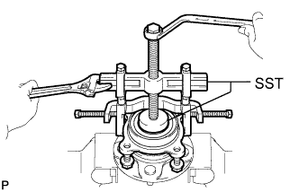
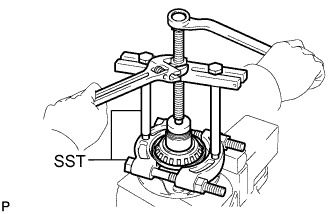
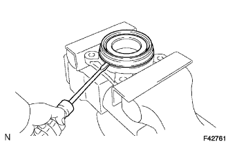

FRONT AXLE HUB > DISASSEMBLY |
| 1. REMOVE FRONT AXLE WITH ABS ROTOR BEARING ASSEMBLY |
Gently fix the front axle hub in a vise.
 |
Using SST, remove the bearing.
 |
If part of the bearing remains in the front axle hub, use SST to remove it.
| 2. REMOVE FRONT AXLE HUB OIL SEAL |
 |
Using a screwdriver, pry off the oil seal.